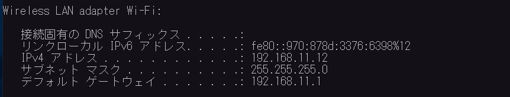
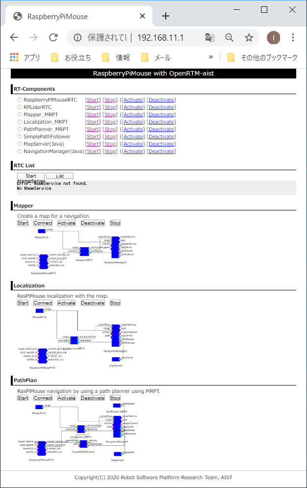
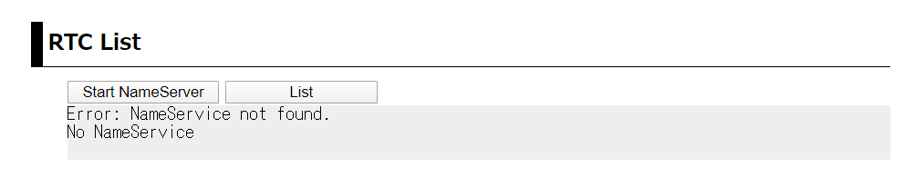
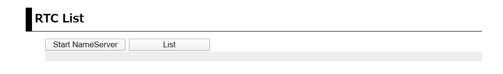
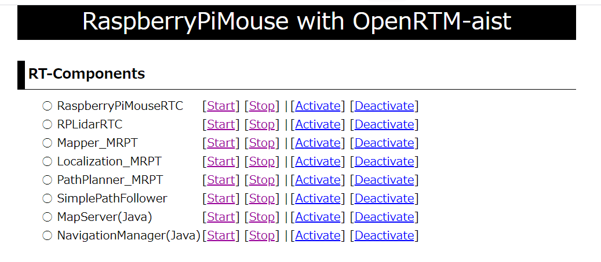

RTコンポーネントの起動方法¶
ここでは、RasPiMouse2019を操作するRTC群の起動方法について説明します。 RasPiMouse2019のナビゲーションのためのRTC群の操作は、 sshでログインしてターミナル上で起動、接続、有効化等の操作を行うことも 可能ですが、ナビゲーションRTC群の基本操作は Webブラウザを介して 実行することができます。 ここでは、最初にWebブラウザを用いた操作について説明し、次にターミナルから ログインして操作する方法について解説します。
Webブラウザを用いたRTCの起動¶
RasPiMouse2019の電源と投入し、Raspbian を起動させます。 クライアントPCの無線LANのマネージャーからhostapd.confで設定したssidが 見えることを確認し、接続してください。
WindowsPCの場合には、タスクバーの右側のWifiの設定から接続することができます。 接続時には、パスワードを入力する必要がありますので、hostapd.confに記載した passwordを入力してください。
正常に接続できれば、192.168.11.XX というIPアドレスが設定されているはずですので、 ipconfigコマンド等で確認してください。
IPアドレスの確認終了後、RasPiMouse2019（IPアドレス: 192.168.11.1）に Webブラウザから接続してください。 下のようなページが出力されれば正常に動作しています。
ネームサーバーの起動¶
起動直後ではネームサーバーが動作していないため、2段目の "RTC LIST"の部分は、 下のようなエラー表示になっています。
ナビゲーションRTC群を含むOpenRTM-aistをベースとしたRTコンポーネントでは、 ネームサーバーが必要なため、「Start NameServer」ボタンをクリックして起動してください。
ボタンをクリック後は、起動メッセージのページに移行し、3秒後にトップページに移動します。 移動後、しばらくすれば "RTC LIST"の部分が下記のようになります。
このようにエラーメッセージが表示されない場合は、ネームサーバが正常に動作しています。
ナビゲーションRTC群の操作¶
トップページの最初のセクションには、下図のように RasPiMouse2019のナビゲーションに用いるRTCの名称および 操作のCGIプログラムへのリンクの一覧が表示されています。
ここのRTCの起動、終了、アクティベート、デアクティベートをこれらのリンクを押下することで 操作することができます。
各RTCの起動後は、第2セクションの "RTC List" にある「List」ボタンを押下することで、 ネームサーバーに登録されているRTCの一覧を更新、表示することができます。
コマンドラインからRTCの起動¶
Webブラウザからでは、現在、個々のRTCの起動、終了、アクティベート、デアクティベートに対応していますが、 RTCの強制終了やエラー時の対応など細かい操作を行うことができません。
RTCの強制終了やエラー時の対応など細かい操作が必要な場合には、 クライアントPCのターミナルからssh経由でログインしてコマンドラインのオペレーションを実行してください。
WindowsPCからのsshによるアクセスは、 TaraTerm や PuTTY , mintty 等のターミナルエミュレータを利用してください。 各ソフトウェアの詳細は、それぞれのプロジェクトページを参照してください。
RasPiMouse2019へsshでログイン後は、rtshell等を使用してエラーの回復や 各RTCのプロセスの強制終了等を行うことができます。
また、ナビゲーションRTCの設定ファイルや起動スクリプトは、/usr/local/openrtm の下に配置されています。 RTCの個別起動は、/usr/local/openrtm/bin/<RTC名>.sh というファイル名で作成されており、 各RTCの設定ファイルは、/usr/local/openrtm/etc/<RTC名>.conf として配置されています。
後述するマップ作成(Mapper)、位置検出(localize)、経路生成(path_plan)のシステム制御用 スクリプトは、/usr/lcoal/openrtm の下に、mapper.sh, localize.sh, path_plan.sh として 配置されています。
これらのシステム制御用のスクリプトは、第2引数として start, stop, connect, disconnect, activate, deactivate のコマンドを指定することで制御すると都ができます。
例えば、マップ作成のシステムを開始するには、事前にクライアントPCでXサーバーを起動後、
$ export DISPLAY=<クライアントPCのIPアドレス>:0.0
$ /usr/local/openrtm/mapper.sh start
$ /usr/local/openrtm/mapper.sh connect
$ /usr/local/openrtm/mapper.sh activate
によって各RTCの起動、ポートの接続、アクティベートを行うことができます。 なお、最初のコマンドは、NavigationManagerのGUIパネルを表示させるための設定です。
また、終了時には下記のコマンドでRTCを終了させることができます。
$ /usr/local/openrtm/mapper.sh deactivate
$ /usr/local/openrtm/mapper.sh stop